2
▲3
▶
2
▲3
▶
Avengers Doomsday | Magneto vs Doom | Get Your Tickets at TGV Now
TGV Cinemas · 2,481,077再生 · 公開 11/26
2
▲3
▶
TGV Cinemas · 2,481,077再生 · 公開 11/26
 3
初登場
▶
3
初登場
▶
イブラヒム【にじさんじ】 · 1,263,761再生 · 公開 11/27
 5
▲6
▶
5
▲6
▶
GAOU CINEMATIC STUDIOS【アメコミ映画最新情報紹介チャンネル】 · 30,712再生 · 公開 11/26
 6
初登場
▶
6
初登場
▶
Kuzuha Channel · 946,623再生 · 公開 11/27
 7
▲10
▶
7
▲10
▶
サカナクション sakanaction · 267,747再生 · 公開 11/26
 8
▼6
▶
8
▼6
▶
マーベル公式 · 3,236,504再生 · 公開 11/24
 9
▼6
▶
9
▼6
▶
モンスト（モンスターストライク）公式 · 512,689再生 · 公開 11/26
 11
▼5
▶
11
▼5
▶
ドズル社 · 392,831再生 · 公開 11/26
 13
初登場
▶
13
初登場
▶
HikakinGames · 1,335,737再生 · 公開 11/27
 15
初登場
▶
15
初登場
▶
Kanae Channel · 470,157再生 · 公開 11/27
 17
▼8
▶
17
▼8
▶
GON · 433,195再生 · 公開 11/26
 19
初登場
▶
19
初登場
▶
ローレン・イロアス / Lauren Iroas【にじさんじ】 · 388,609再生 · 公開 11/27
 21
初登場
▶
21
初登場
▶
Subaru Ch. 大空スバル · 537,844再生 · 公開 11/27
 22
▲7
▶
22
▲7
▶
Ado · 507,144再生 · 公開 11/26
 23
初登場
▶
23
初登場
▶
エクス・アルビオ -Ex Albio- · 332,994再生 · 公開 11/27
 24
▲1
▶
24
▲1
▶
ShowMinorSavage_official · 87,935再生 · 公開 11/26
 25
▼7
▶
25
▼7
▶
葉ちゅべ · 165,435再生 · 公開 11/26
 27
初登場
▶
27
初登場
▶
風楽奏斗 / Fura Kanato · 180,698再生 · 公開 11/26
 29
初登場
▶
29
初登場
▶
今日ポケch. · 211,057再生 · 公開 11/26
 31
▼17
▶
31
▼17
▶
牛沢 · 211,485再生 · 公開 11/26
 33
▼3
▶
33
▼3
▶
ブラックナイト山田 · 215,598再生 · 公開 11/26
 35
▼15
▶
35
▼15
▶
がみくん · 212,610再生 · 公開 11/26
 37
初登場
▶
37
初登場
▶
キャベツの人【ゲーム紹介】 · 220,405再生 · 公開 11/26
 39
▼27
▶
39
▼27
▶
らっだぁ · 698,935再生 · 公開 11/25
 41
初登場
▶
41
初登場
▶
星導ショウ / Hoshirube Sho【にじさんじ】 · 198,367再生 · 公開 11/27
 43
▼21
▶
43
▼21
▶
カワノKawano · 270,345再生 · 公開 11/26
 44
▼11
▶
44
▼11
▶
histandardofficial · 169,628再生 · 公開 11/25
 45
▼9
▶
45
▼9
▶
まじめにヤバシティ · 134,142再生 · 公開 11/26
 47
初登場
▶
47
初登場
▶
御子神琴音 / Mikogami Kotone【にじさんじ】 · 305,678再生 · 公開 11/27
 49
▼17
▶
49
▼17
▶
KUNの50人クラフト · 158,865再生 · 公開 11/26
 1
→
▶
1
→
▶
timelesz [タイムレス] · 1,325,236再生 · 公開 11/25
 4
→
▶
4
→
▶
APHRODITE GANG · 557,392再生 · 公開 11/26
 10
▲17
▶
10
▲17
▶
桑田佳祐 · 126,535再生 · 公開 11/26
 12
▼5
▶
12
▼5
▶
XG · 269,080再生 · 公開 11/26
 14
初登場
▶
14
初登場
▶
Masato Hayashi · 101,477再生 · 公開 11/26
 16
▼3
▶
16
▼3
▶
町田ちま【にじさんじ】 · 437,671再生 · 公開 11/25
 18
▼8
▶
18
▼8
▶
spitzclips · 404,039再生 · 公開 11/25
 20
▼5
▶
20
▼5
▶
Tele · 142,669再生 · 公開 11/25
 26
初登場
▶
26
初登場
▶
CUTIE STREET · 43,381再生 · 公開 11/26
 28
▼9
▶
28
▼9
▶
THE FIRST TAKE · 362,323再生 · 公開 11/25
 30
初登場
▶
30
初登場
▶
JYP Entertainment · 640,902再生 · 公開 11/26
 32
▼11
▶
32
▼11
▶
Stray Kids Japan Official YouTube · 3,502,571再生 · 公開 11/25
 34
▼11
▶
34
▼11
▶
RADWIMPS · 225,084再生 · 公開 11/25
 36
▼5
▶
36
▼5
▶
Meychan · 138,255再生 · 公開 11/25
 38
初登場
▶
38
初登場
▶
Masayoshi Oishi - Topic · 8,616再生 · 公開 11/27
 40
▲7
▶
40
▲7
▶
IM NAYEON · 403,572再生 · 公開 11/26
 42
初登場
▶
42
初登場
▶
VESPERBELL · 42,407再生 · 公開 11/26
 46
▼11
▶
46
▼11
▶
乃木坂46 OFFICIAL YouTube CHANNEL · 319,220再生 · 公開 11/25
 48
初登場
▶
48
初登場
▶
Eden - Topic · 3,018再生 · 公開 11/27
 50
▼11
▶
50
▼11
▶
izna (이즈나) · 1,282,045再生 · 公開 11/25
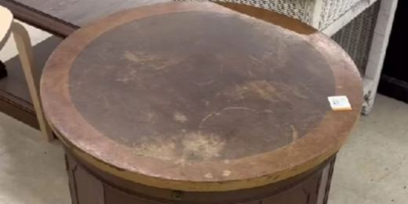
1000万回ねとらぼ · 26 Nov · @diybybloomy ♥172,609
www.famtimes.co.kr · 26 Nov
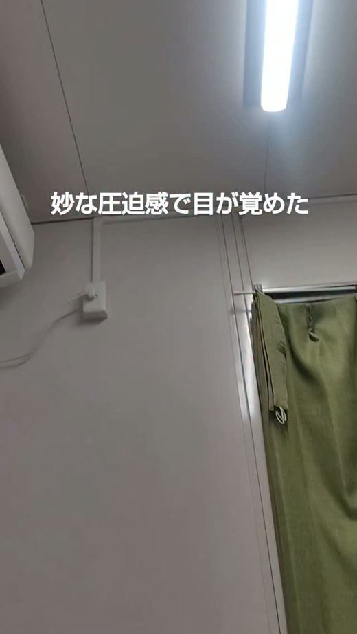
260万回Yahoo!ニュース · 25 Nov · @rion7849 ♥121,971
ライブドアニュース · 25 Nov
Excite エキサイト · 25 Nov
ライブドアニュース · 25 Nov
 100万回
100万回
Excite エキサイト · 25 Nov
Excite エキサイト · 25 Nov
ライブドアニュース · 25 Nov
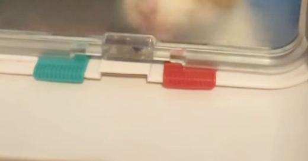
64万回 NEWライブドアニュース · 25 Nov
ライブドアニュース · 25 Nov
Yahoo!ニュース · 25 Nov
Excite エキサイト · 26 Nov
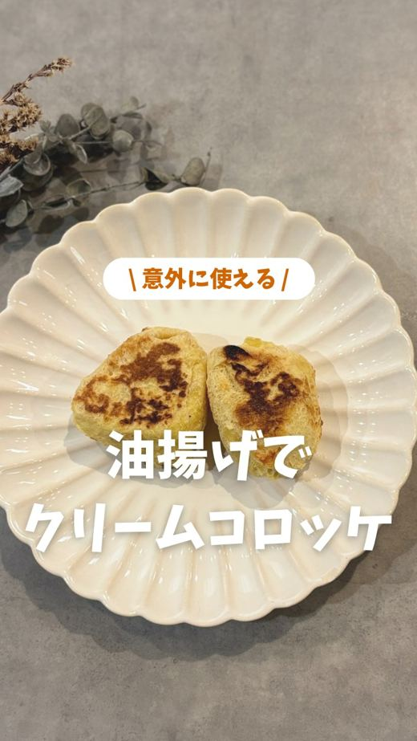
108万回ねとらぼ · 24 Nov · @tonon_kurashi ♥16,874
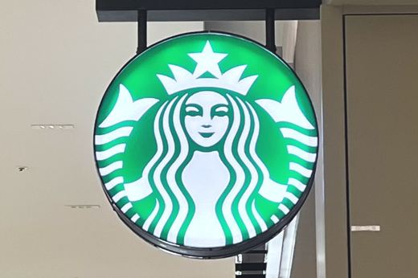
NEWYahoo!ニュース · 26 Nov
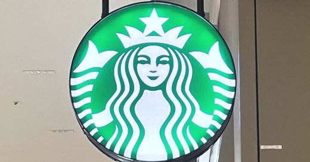
NEWハフポスト · 26 Nov
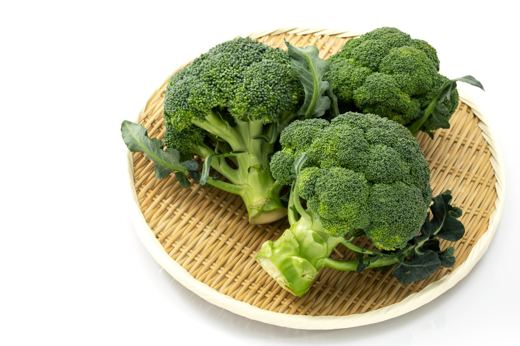
NEWオトナンサー · 26 Nov
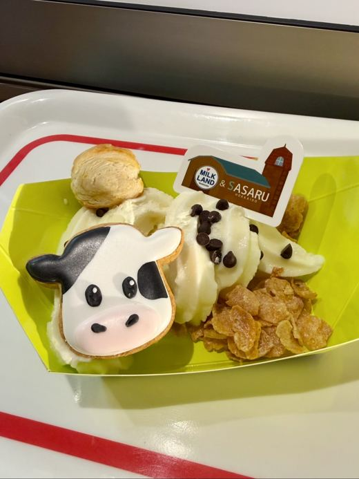
NEW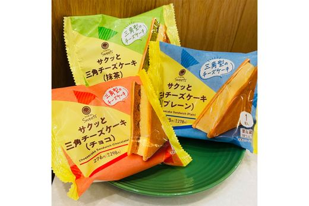
NEWLASISA · 26 Nov
Mantan Web · 26 Nov · @miyu_honda_official
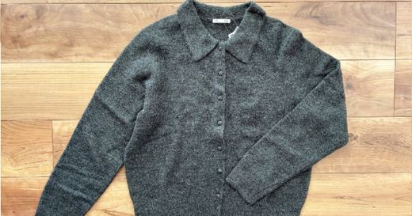
NEWYahoo!ニュース · 26 Nov
 NEW
NEW
Infoseek · 26 Nov
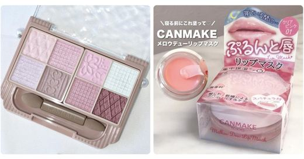
NEWMAQUIA · 26 Nov
西スポWEB OTTO! · 26 Nov
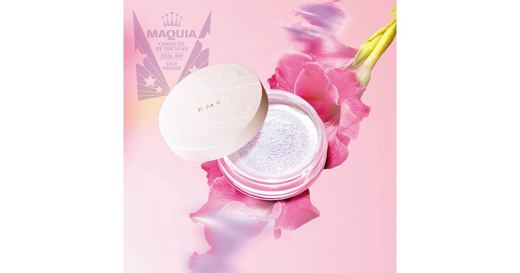
NEWMAQUIA · 26 Nov
ねとらぼ · 26 Nov
All About ニュース · 26 Nov
MAQUIA · 26 Nov
lasisa.net · 26 Nov
grapee.jp · 26 Nov
 11/27 08:30
🗼 東京
11/27 08:30
🗼 東京
株式会社誠文堂新光社のプレスリリース 株式会社誠文堂新光社（東京都文京区）は、2026年12月4日（金）に、『ワタナベマキの だ
株式会社JR東日本クロスステーションのプレスリリース グランスタスイーツ担当のMUST BUY！2026年オープンの注目ショップ
株式会社Daiyuのプレスリリース 日本を代表する建築誌『新建築』2026年9月号にも掲載され、歴史的建造物の保存と現代の事業活
株式会社エルティーアールのプレスリリース クリスタルのように輝く冬の世界観をコンセプトにしたカフェにご期待ください！ 株式会社
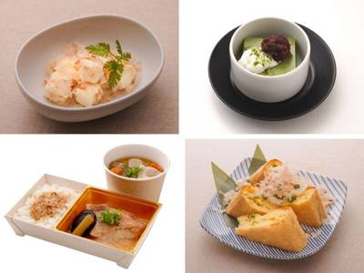
11/26 12:00 🗼 東京株式会社にんべんのプレスリリース 株式会社にんべん(東京都中央区、代表取締役社長 髙津伊兵衛)は、 「日本橋だし場 はなれ」にお
株式会社ビーケー・ジャパンのプレスリリース 【期間限定】11月27日（金）～ 株式会社ビーケー・ジャパン（本社：東京都千代田区
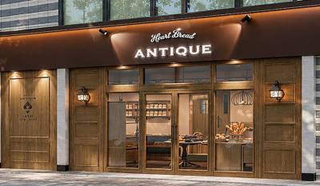
11/26 10:20 🗼 千葉株式会社オールハーツ・カンパニーのプレスリリース ～2026年12月18日（金）よりグランドオープン～ 全国にベーカリー＆パティ
株式会社グレープストーンのプレスリリース 2026年12月1日(火)～12月21日(月)期間限定OPEN 株式会社グレープストー
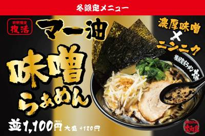
11/26 10:00 🗼 横浜株式会社AZismのプレスリリース ~黒いマー油が味噌スープのコクを引き立てる冬の一杯。冬限定メニュー「マー油味噌らぁめん」を2
株式会社ガトーミシェルのプレスリリース 11月27日(金)より「X'mas Gallery」、12月1日(火)より冬季
 11/27 08:45
🚄 大阪
11/27 08:45
🚄 大阪
バターを贅沢に使用した濃厚な風味とサクサク・ホロホロ食感。＆グーテ梅田阪急を除く全店舗にて販売しています。 大阪・兵庫を中心に店
あさ出版のプレスリリース 6万部 突破 『バスが来ましたよ』 作者 由美村 嬉々 氏 最新刊！ 株式会社あさ出版（代表取締役：田
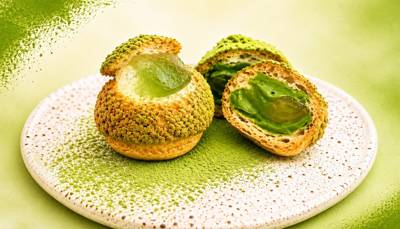
11/27 07:00 🚄 京都とろり天使のわらびもち株式会社のプレスリリース とろり天使のわらびもち覚王山店（愛知県名古屋市）では12月1日（火）より、覚王山
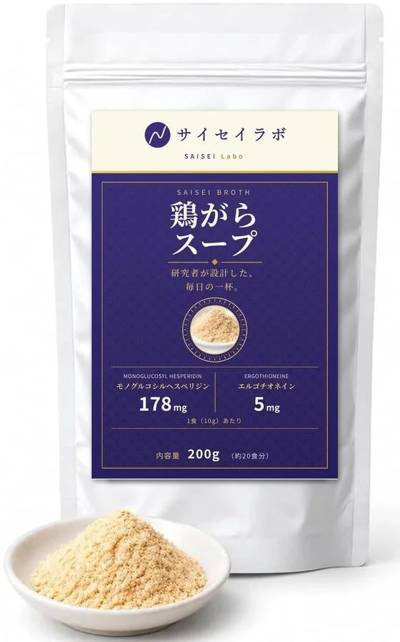
11/26 23:10 🚄 埼玉スペースシードホールディングス株式会社のプレスリリース きのこに含まれるエルゴチオネインと、柑橘に含まれるヘスペリジン類を一つの
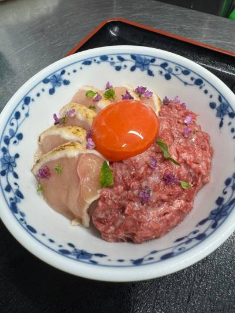
11/26 18:00 🚄 大阪炭火焼 平八郎のプレスリリース 大阪・天神橋の「炭火焼 平八郎」は、馬刺しと炭火炙り鶏を一杯で楽しめる新商品「桜とかしわの雅丼(
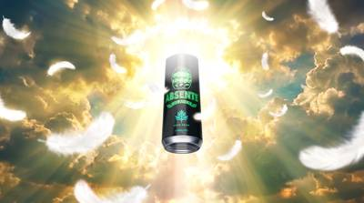
11/26 17:30 ❓ 不明マルカイコーポレーション株式会社のプレスリリース アブサントヘヴンの新キャンペーン「ヘヴン・エクスペリエンス」が2026年11月
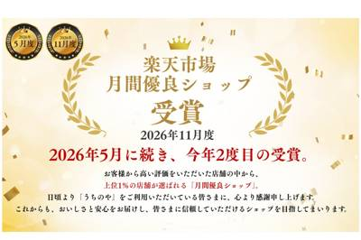
11/26 16:20 🌐 全国うちのや株式会社のプレスリリース “家庭料理品質”と“保存料無添加・常温長期保存”を実現したうちのや製法で作ったおかずパック、ロ
綿半ホールディングス株式会社のプレスリリース 株式会社綿半ホームエイド（長野県長野市 代表取締役社長：永岡幸春）は、綿半オリジ
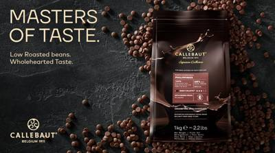
11/26 16:00 ❓ 不明バリーカレボージャパン株式会社のプレスリリース チョコレートの新章へ。多彩な味わいと新たな可能性を提案 このたび、ベルギーを代表
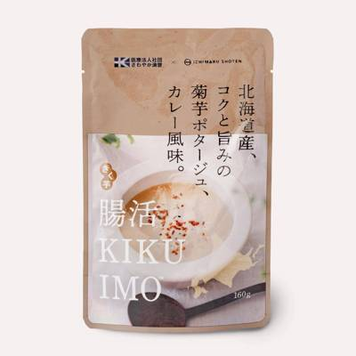
11/26 16:00 ❓ 不明一丸商店株式会社のプレスリリース 一丸商店株式会社(本社：北海道札幌市、代表取締役：一丸 浩一郎)は、2026年11月26日(木
株式会社メリーチョコレートカムパニーのプレスリリース ～2026年12月23日（水）より予約開始～ チョコレートをはじめとする贈
敷島製パン株式会社のプレスリリース 「とろけるチョコデニッシュ」「濃厚ホワイトチョコとベリーのパンケーキ」発売 敷島製パン株式会
２０２６年１１月２７日（金）～１２月３日（木） ミニストップは、２０２６年１１月２７日（金）より７日間限定で、「さくさくポテト」
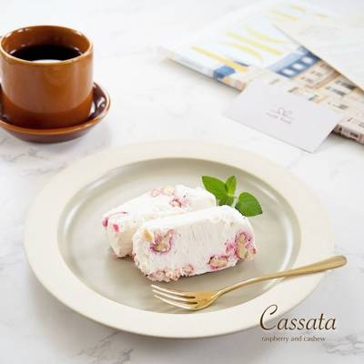
11/26 15:00 ❓ 不明加藤貿易株式会社のプレスリリース ～冷凍庫から出して切り分け、少し解凍すると口どけなめらかに。 ラズベリーの甘酸っぱさが広がる、
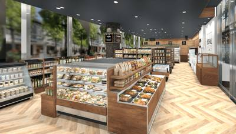
11/26 14:00 🚄 大阪株式会社ライフコーポレーションのプレスリリース ～「淀屋橋」駅直結！ビジネスパーソンに寄り添う、ビオラルらしい品ぞろえ～ “お
株式会社フレッシュネスのプレスリリース 2026年11月28日（土）・29日（日）の2日間 公式アプリ限定クーポン配信 コロワ
株式会社久原本家のプレスリリース 久原本家グループ（福岡県糟屋郡久山町 社主：河邉 哲司）の、「茅乃舎だし」など和風調味料を販
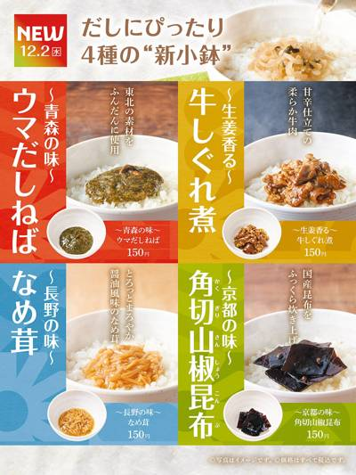
11/26 13:00 ❓ 不明株式会社プレナスのプレスリリース 12.2(水)発売 株式会社プレナスは、定食レストラン「やよい軒」を、日本国内にて2026年
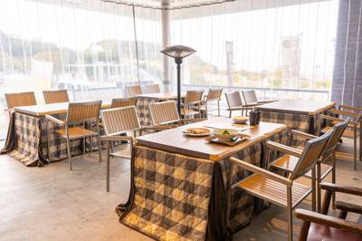
11/26 13:00 🚄 淡路島ユーアールエー株式会社のプレスリリース 淡路島生パスタと窯焼きピザ「Trepici」で、屋外テラスにこたつ席を 2026年12月
株式会社コイサンズのプレスリリース 2026年12月新商品「クリスマスパンフェア＆冬のグルメパンフェア」開催のお知らせ 三重県
株式会社九十九島グループのプレスリリース ＜期間限定＞年末年始の贈り物に。専門店が贈る、パイ3種の詰合せ。 HAKATA ORI
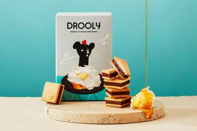
11/26 12:10 🚄 大阪株式会社シュクレイのプレスリリース ひとくちで広がる、至福のハーモニー。昨年大好評だった人気商品が、今年も期間限定で登場します。
モロゾフ株式会社のプレスリリース モロゾフ株式会社（神戸市東灘区）は、2026年で創立95周年を迎えました。これを記念して、20
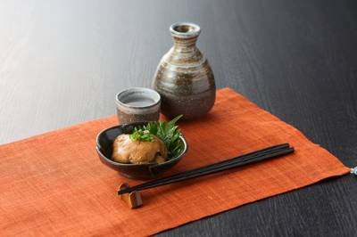
11/26 11:30 🚄 北海道株式会社しゃけをのプレスリリース 秋サケの漁獲量は最盛期の約12分の1に。今ある水産資源の価値を高め、新たな地域産業の創出に挑む
ホシザキ株式会社のプレスリリース フルモデルチェンジで流量アップと使いやすさ向上 総合フードサービス機器メーカーであるホシザキ
株式会社プレナスのプレスリリース やよい軒プレイリスト特設サイトURL：https://www.yayoiken.com/lp/
株式会社サンマルクカフェのプレスリリース 11月30日(月)開催のサンマルクカフェの日もコラボ特別バージョンを開催 株式会社サン
赤城乳業株式会社のプレスリリース 「Sof’（ソフ）ミルクチョコレート」 2026年11月30日（月）より全国発売 赤城乳業株
株式会社プレナスのプレスリリース 12.2(水)より新発売 株式会社プレナスは、持ち帰り弁当の「Hotto Motto (ほっと
株式会社ロイヤルホテルのプレスリリース ～リニューアルを記念したカクテル「Sapphire Dome」を発売～ リーガロイヤル
株式会社 JEAN-PAUL HÉVIN JAPONのプレスリリース 《道程》を照らす星と黄金の贈り物──東方の賢者メルキオール
亀田製菓株式会社（本社：新潟県新潟市、代表取締役社長：髙木 政紀）は、『72g こつぶっこ 黒みつ味』（以下：『こつぶっこ 黒み
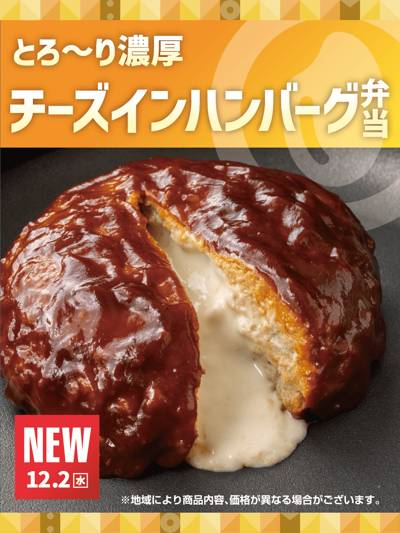
11/26 11:00 ❓ 不明ほっともっとのプレスリリース 株式会社プレナスは、持ち帰り弁当の「Hotto Motto (ほっともっと)」を、2026年10月
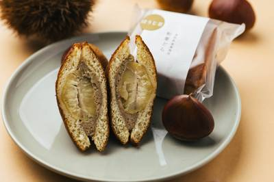
11/26 11:00 🚄 鳥取株式会社OMOIのプレスリリース ～鳥取県産「和栗」と香ばしいほうじ茶を生クリームと合わせた生どら焼き～ 株式会社OMOI（代表
株式会社バンダイ キャンディ事業部のプレスリリース ～全国のセブン‐イレブン店舗にて12月1日(火)より展開～ 株式会社バンダイ
ダイタン商事株式会社のプレスリリース サクッと頬張る、肉のごちそう。肉汁あふれるメンチカツを、そば屋のコク旨カレーに合わせました
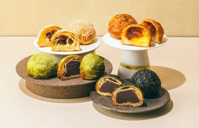
11/26 10:00 ❓ 不明株式会社木村屋總本店のプレスリリース 酒種入りのサクサクパイがさらにおいしく進化！おもたせにもおすすめ 株式会社木村屋總本店（本
株式会社SAKIGAKEホールディングスのプレスリリース さらに深まる味噌のコクと旨み。濃厚な味わいを極太麺で楽しむ、冬の贅沢な
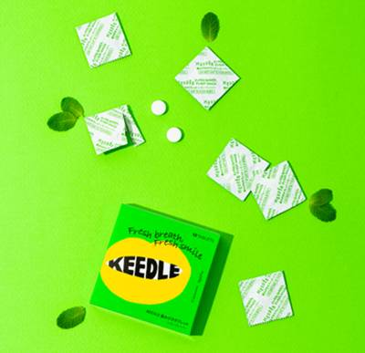
11/26 10:00 🚄 福島株式会社ON-TAMAのプレスリリース ～11月28日(土)より全国のPLAZAにて先行発売～ 韓国コスメや食品の輸入・販売を手
株式会社然花抄院のプレスリリース ～作品の世界観と秘宝の輝きを表現した 限定創作菓子をはじめ、優美な雅菓を期間限定で発売～ 株式
株式会社ハチバンのプレスリリース 2026年12月7日（月）から発売！人気No.1「野菜トマトらーめん」も継続販売中 1967年
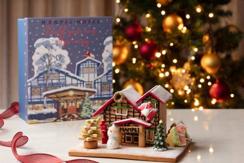
11/26 10:00 🚄 長野株式会社万平ホテルのプレスリリース 本リリースのポイント ・万平ホテルは、登録有形文化財「アルプス館」をモチーフにした手作りキッ
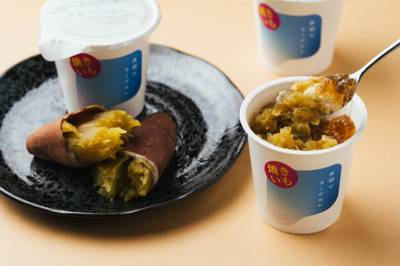
11/26 10:00 🚄 鳥取株式会社OMOIのプレスリリース さつまいもは焼き芋がいちばんおいしい。だから焼き芋は専門店に。紅はるかの焼き芋と濃厚な水切りヨ
株式会社然花抄院のプレスリリース 〜作品の世界観と秘宝の輝きを表現した限定創作菓子をはじめ、優美な雅菓を期間限定で発売〜 株式会
インテグリカルチャー株式会社のプレスリリース 日本と韓国から、細胞培養技術が生み出すCellAg®コスメ 韓国の細胞培養技術企業
株式会社JFLAホールディングスのプレスリリース 株式会社 JFLA ホールディングス（本社：東京都中央区、代表取締役社長：檜垣
株式会社サンマルクホールディングスのプレスリリース 〜国民的ロングセラー「香薫®」のジューシーな旨みと、自家製の焼きたてパンが織
株式会社 GARAKU RETAILのプレスリリース GARAKU自慢の和風ダシの旨みとコクに、刺激的な辛さをプラス。別添の「山
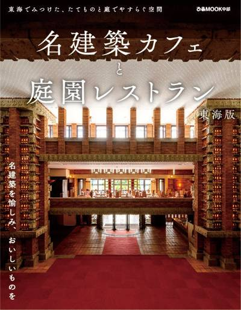
11/26 10:00 ❓ 不明ぴあ株式会社のプレスリリース 11月26日(木)発売！ 東海でみつけた、たてものと庭でやすらぐ空間。 歴史を刻むレトロな建築、ど
株式会社R-LAB.のプレスリリース 関西初出店を記念し、キューブ型ムースケーキ「CUBE」シリーズや看板商品のバスクチーズケー
株式会社ネットタワーのプレスリリース 「伝統のお茶を新しい飲み方で楽しむ」CHABARより、華やかな桂花の香りを楽しむ贅沢フレー
アークランドサービスホールディングス株式会社のプレスリリース ロースカツやねぎチャーシュー、キャベツにナムルをドドンと盛り付け！
株式会社YOPUのプレスリリース 韓国料理×麻辣！「ヨプの王豚塩焼」から新シリーズ『麻辣の虜』全4品が登場！ 11月30日より全
株式会社譚仔日本のプレスリリース 『クラフトスパイスジンジャーエール』も同時販売譚仔麻辣湯では『ココナッツカレー麻辣湯』が期間限
SRSホールディングス株式会社のプレスリリース ~冬の季節メニュー第1弾も同日、販売開始！～ 株式会社フーズネット（本社：大阪府
株式会社松屋フーズホールディングスのプレスリリース 海鮮だしと肉の旨味を凝縮した人気チゲが、手軽なミニサイズで登場！ セット購入
株式会社壱番屋のプレスリリース 株式会社壱番屋（本社：愛知県一宮市、代表取締役社長 葛原 守）は、2026年12月1日（火）よ
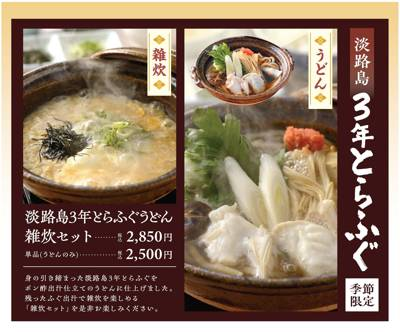
11/26 10:00 🚄 淡路島ユーアールエー株式会社のプレスリリース 淡路島3年とらふぐを使用した2026年2月までの期間限定メニュー「淡路島３年とらふぐうど
株式会社 村上農園のプレスリリース 箱根駅伝に向けた選手たちの体づくりと“食”の舞台裏に密着 原監督夫妻のコメントも収録 発芽野
アークランドサービスホールディングス株式会社のプレスリリース 〜チェンマイ往復航空券や宿泊券が当たる豪華SNSキャンペーンや冬の
一般社団法人アニマルウェルフェア・コーポレート・パートナーズ・ジャパンのプレスリリース 「FOOD MADE GOOD Japa
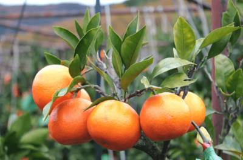
11/26 15:00 🚄 香川JA全農の産直通販JAタウンのプレスリリース ～「国消国産 お客様送料負担なしキャンペーン」で秋のおすすめ商品をお得に購入！～
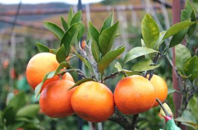
11/26 15:00 🚄 香川全国農業協同組合連合会のプレスリリース ＪＡ全農が運営する産地直送通販サイト「ＪＡタウン」のショップ「さぬき旬彩館」では、香川
株式会社ユニシアホールディングスのプレスリリース ～オープン記念キャンペーンで【生ビール290円（税込319円）！】～ 株式会社
JA全農の産直通販JAタウンのプレスリリース ＪＡ全農が運営する産地直送通販サイト「ＪＡタウン」のショップ、「ＪＡ全農京都ショ
全国農業協同組合連合会のプレスリリース ＪＡ全農が運営する産地直送通販サイト「ＪＡタウン」のショップ、「ＪＡ全農京都ショップ」
株式会社ドトールコーヒーのプレスリリース 株式会社ドトールコーヒー（本社：東京都渋谷区／代表取締役社長：星野 正則）は、株式会社
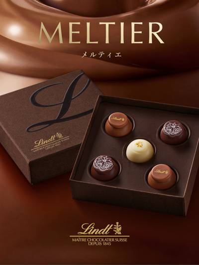
11/26 11:00 🚄 愛知リンツ＆シュプルングリージャパン株式会社のプレスリリース 名古屋「星ヶ丘三越」・横浜「東急百貨店たまプラーザ店」のリンツ新店舗を
株式会社ロイズコンフェクトのプレスリリース 北海道札幌市のチョコレートメーカー「株式会社ロイズコンフェクト」は、ロイズが出店する
株式会社ユニシアホールディングスのプレスリリース ～オープン記念キャンペーンで【生ビール290円（税込319円）！】～ 株式会社
株式会社甲羅のプレスリリース 削る楽しさと、通うほど増えるお得感。年始から春先まで楽しめる赤からの新春キャンペーン 「おいしさと
全国農業協同組合連合会のプレスリリース ＪＡ全農が運営する産地直送通販サイト「ＪＡタウン」のショップ「とちぎ新鮮倉庫」では、「
JA全農の産直通販JAタウンのプレスリリース ～「国消国産 お客様送料負担なしキャンペーン」でとちぎのおすすめ商品をお得に購入！
有限会社ナチュラルスマイルのプレスリリース 11月28日（土）・29日（日）・30日（月）は鹿児島市・日置市の3店舗で実施。「ス
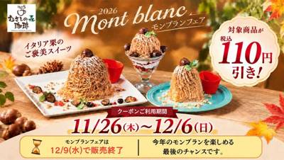
11/26 10:00 ❓ 不明株式会社すかいらーくホールディングスのプレスリリース ～秋の味覚を楽しむラストチャンス。高原リゾートのような癒しの空間で、今年最
Vポイントマーケティング株式会社のプレスリリース ―V会員の購買・行動データを活用したリサーチ「Vアンケート」による独自調査―
GYRO HOLDINGS 株式会社のプレスリリース 毎月「8の付く日」には、ドリンク半額や焼肉メニューの倍盛りなど、日替わりの
株式会社パパスのプレスリリース パパスカフェ丸の内本店では、2026年11月20日（金）より、パパスを長年愛用しているフレンチの
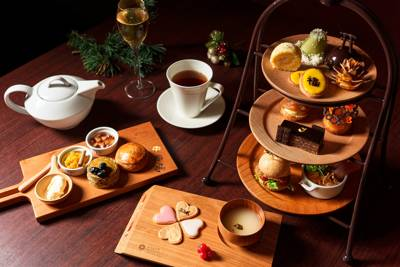
11/26 13:00 🗼 箱根ハイアット リージェンシー 箱根 リゾート＆スパのプレスリリース ～箱根の森を感じる開運スイーツとセイボリーで福を招く～ 202
株式会社新朝プレスのプレスリリース 〜 楽天ふるさと納税・ふるさとチョイスほか計4サイトで受付 〜 株式会社新朝プレスは、栃木県
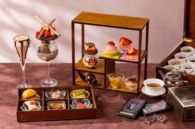
11/26 14:00 🚄 沖縄ストリングスホテル東京インターコンチネンタルのプレスリリース 中国料理「チャイナシャドー」では、2026年12月26日（土）から
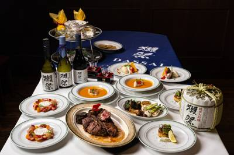
11/26 11:00 🚄 福岡株式会社WDI JAPANのプレスリリース ニューヨークの縁が結ぶ、福岡と山口。「獺祭」との新春限定コラボレーション企画 メーカ
株式会社文明堂東京のプレスリリース 包装紙からカステラへ、ストーリーがつながる文明堂オリジナルデザイン。2027年の干支「未」に
株式会社味とサイエンスのプレスリリース 宮前さんのブランド「maq bon（マキュボン）」と「HONEY with TEA &a
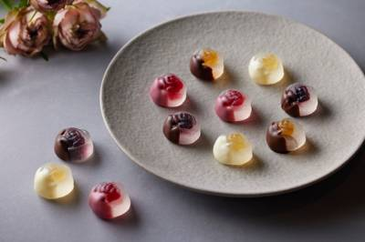
11/26 19:06 🗼 東京マリオット・インターナショナルのプレスリリース すり硝子のような琥珀糖とチョコレートが織りなす「果内水晶ショコラ」、新作クッキー
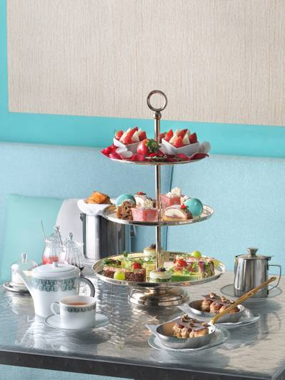
11/26 18:23 🗼 東京ティファニー・アンド・カンパニー・ジャパン・インクのプレスリリース 「Holiday Afternoon Tea」は、12月31
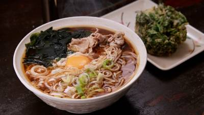
11/26 17:30 🗼 東京株式会社ＢＳ日テレのプレスリリース １１月３０日（月）よる１０時～放送「ドランク塚地のふらっと立ち食いそば」～東京・金町 うちの
株式会社アークミールのプレスリリース 「かいのみ」は富里インター店・小山犬塚店。「らんぷ」は古市場店・環七梅島店でご用意。どん食
シマダグループ株式会社のプレスリリース 富士山を望む宿泊者専用の「HORIZON ONSEN」を1日限定で特別開放（事前予約制）
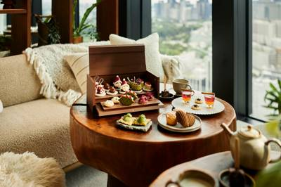
11/26 16:00 🗼 東京MT&SHホテルマネジメント合同会社のプレスリリース メインダイニングとメインバーで、東京産いちごを丸ごと使ったスイーツ
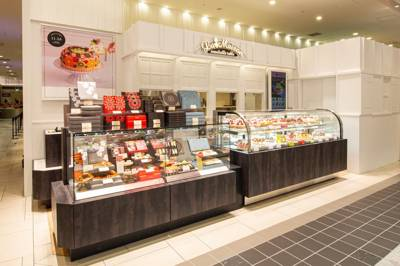
11/26 16:00 🗼 八王子株式会社ピー・エス・コープのプレスリリース 株式会社ピー・エス・コープ（本社：神奈川県横浜市、代表取締役社長：佐々木達明）は、フ
綿半ホールディングス株式会社のプレスリリース ―健常成人36名の試験で、腸内フローラの種類が増えることも確認― 綿半トレーディ
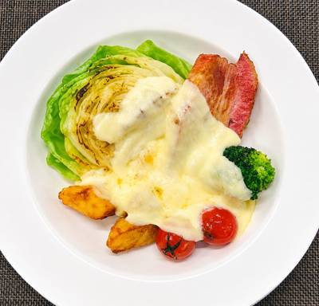
11/26 15:10 🗼 神奈川株式会社 京急百貨店のプレスリリース ANA国際線機内食への採用を契機に、横須賀キャベツ・横須賀こだわりかぼちゃを使用した期間限
株式会社西武・プリンスホテルズワールドワイドのプレスリリース 【期間】2027年1月15日（金）～3月14日（日） FUNな体験
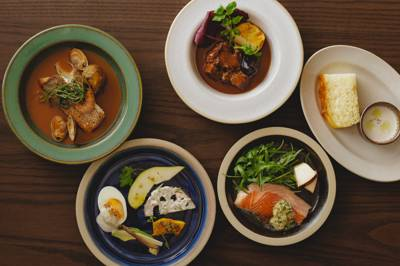
11/26 15:00 🗼 渋谷株式会社スープストックトーキョーのプレスリリース 全国の生産者とのつながりを活かし、素材の個性をフレンチベースのビストロ料理へ。
株式会社キープ・ウィルダイニングのプレスリリース 薪火の芳醇な香りと冬の海の恵み。大切な記念日を彩る、冬だけの特別なディナー。
株式会社キープ・ウィルダイニングのプレスリリース 牛フィレ肉の薪焼きステーキ、フォワグラのパイ包み焼き、エゾ鮑。薪火と厳選食材が
株式会社 源 吉兆庵ホールディングスのプレスリリース 全国菓子大博覧会 最高賞受賞作品『花美麗鳥』が宗家 源 吉兆庵 銀座本店に
日本空港ビルデング株式会社のプレスリリース 日本空港ビルデング株式会社は、2026年12月1日（火）より「廣尾 瓢月堂」の常設店
日本空港ビルデング株式会社のプレスリリース 塩バニラフィナンシェ 日本空港ビルデング株式会社は、2026年12月3日（木）より横
ワタミ株式会社のプレスリリース 11月27日(金)限定、国内全13店舗で開催。フライデーズ シグネチャーバーガーをご注文のお客様
株式会社神戸物産のプレスリリース 厳選されたお肉と製菓専用厨房で手作りした18種類の自家製ジェラート、ホテルのデザートビュッフェ
ジョルジオ アルマーニ ジャパン 株式会社のプレスリリース 12月21日（月）〜 26日（土）の6日間限定。イタリアの伝統に着想
株式会社ユーハイムのプレスリリース 店内厨房で焼く19世紀誕生のスペシャリテ「ゴーフ」、フランス直輸入の紅茶を展開 株式会社ユー
株式会社アースのプレスリリース 東京都品川区／S様邸 アースのYouTubeショートが4.3万回再生を突破した、品川区の店舗併用
三菱地所株式会社（三菱一号館美術館）のプレスリリース 三菱一号館美術館 Café 1894 アフタヌーンティー『モンマルトルの午
株式会社テンポスホールディングスのプレスリリース 無料開催は今回限り、来年1月から有料化します。東京12/8・9、大阪12/9開
株式会社 新宿高野のプレスリリース 株式会社新宿高野（代表取締役社長 髙野吉太郎 本社東京都新宿区）は、12月9日（水）にケーキ
コンラッド東京のプレスリリース 上質な北陸食材、旨味が凝縮した冬の味覚、そしてズワイガニやいちごスイーツまで コンラッド東京（東
リゾートトラスト株式会社のプレスリリース THE KAHALA Loungeにて、11月28日（土）より予約受付開始 Timel
株式会社近鉄・都ホテルズのプレスリリース シェラトン都ホテル東京（所在地：東京都港区白金台1-1-50）は、ロビーラウンジ バン
株式会社 資生堂パーラーのプレスリリース 公式サイト：https://parlour.shiseido.co.jp/ 「資生堂パ
株式会社CRISPのプレスリリース 2026年は過去最多の23店舗を出店！おいしくてヘルシーな体験を届けるクリスプが70店舗に。
株式会社焼肉坂井ホールディングスのプレスリリース ～ 定番の明太子スパゲッティと旬な寒ぶりとのマリアージュなど期間限定の美味しさ
株式会社イートアンドホールディングスのプレスリリース 11月26日（木）～11月30日（月）の5日間限定！人気商品をおうちでお得
朝霧乳業株式会社のプレスリリース 2026年11月26日（木）～／セレオ八王子北館 1階食品フロア 朝霧乳業株式会社（本社：静岡
株式会社コネクトのプレスリリース 12月4日（金）〜6日（日）の3日間、麺類をご注文のお客様へ感謝の特別価格。各日昼30名・夜2
アークランドサービスホールディングス株式会社のプレスリリース ～看板メニューの「肉汁×千切りとろろ」に大ぶりの海老天がついた大晦
株式会社大将軍のプレスリリース 食の習慣が異なる友人や家族とも、渋谷・スペイン坂で一緒にピザを楽しめるように。 SHOGUN P
株式会社 エーデルワイスのプレスリリース “焼きたてフィナンシェ”が代表商品の「ノワ・ドゥ・ブール」伊勢丹新宿店は、12月2日(
 11/27 08:00
🚄 福岡
11/27 08:00
🚄 福岡
よつばしフーズ株式会社のプレスリリース 全10種類24貫の豪華な二段重！電子レンジで手軽に楽しめる、いなり寿司専門店ならではのお
 11/27 08:00
❓ 不明
11/27 08:00
❓ 不明
株式会社丸千代山岡家のプレスリリース 東北・新潟・北陸の29店舗では「G系特製もやし味噌ラーメン」を 同日から地域・期間限定で販
 11/27 08:00
🚄 京都
11/27 08:00
🚄 京都
SRSホールディングス株式会社のプレスリリース 「暮らしを彩る」をコンセプトに、「焼きたての玉子焼（明石焼）」をご提供！ 玉子焼
 11/27 08:00
❓ 不明
11/27 08:00
❓ 不明
スパイアソリューション株式会社のプレスリリース 来店客の感想をAIが口コミの下書きに変え、声が集まる店と集まらない店の差を小さく
株式会社ユーネットのプレスリリース 福岡・RKB「まじもん！」にて受賞！受賞の模様はTVerで配信中。「源泉十割」が、大分で一番
株式会社タスカジのプレスリリース 〜 調査結果の一部を公開。品目別・置き場所別の集計と各世帯の冷蔵庫写真を収録した詳細レポートを
株式会社おいもやのプレスリリース 立ち上る湯気、職人の経験と勘、今も残る手作業。約40トンのさつまいもを加工予定【12月25日ま
株式会社ホテルマネージメントジャパンのプレスリリース ホテル オリエンタル エクスプレス 鹿児島天文館（所在地：鹿児島県鹿児島市
南あわじ市のプレスリリース 淡路島の豊かな海を守る、南あわじ市内の5つの漁業協同組合が美菜恋来屋に集結します。 2026年11月
株式会社FTG Companyのプレスリリース 3～4種のタレを食べ比べられる「推しダレセット」を各490円（税込）でご用意。セ
株式会社KOMPEITOのプレスリリース 〜金融・企業経営の経験を経営全般への助言と取締役会の監督機能の強化に生かす〜 株式会社
株式会社マルリフーズのプレスリリース 震災・コロナ禍を乗り越え「味噌汁の具」から脱却。パンやパスタにも合う新感覚の万能調味料が、
サントリーホールディングス株式会社のプレスリリース ― トラックドライバー不足への対応強化と環境負荷の低減を目指す ― サントリ
カッパ・クリエイト株式会社のプレスリリース 本日２０２６年１１月２６日（木）よりかっぱ寿司全店にて コロワイドグループのかっぱ
EC-Consulting Japan株式会社のプレスリリース 1本11.3kcal・白砂糖不使用、1日あたり約133円。お湯を
株式会社焼肉坂井ホールディングスのプレスリリース ～ グラタンコロッケとオムライス、ビーフシチューなど冬の美味しい食のハーモニー
株式会社焼肉坂井ホールディングスのプレスリリース ～ グラタンコロッケとオムライス、ビーフシチューなど冬の美味しい食のハーモニー
株式会社焼肉坂井ホールディングスのプレスリリース ～ グラタンコロッケとオムライスにトマトソース。冬の美味しい食のハーモニー”で
ユキグニファクトリー株式会社のプレスリリース ユキグニファクトリー株式会社（本社：新潟県南魚沼市、代表取締役社長：湯澤 尚史）は
株式会社焼肉坂井ホールディングスのプレスリリース ～ グラタンコロッケとオムライスにトマトソース。冬の美味しい食のハーモニー”で
株式会社焼肉坂井ホールディングスのプレスリリース ～ グラタンコロッケとオムライスにトマトソース。冬の美味しい食のハーモニー”で
株式会社SU-BEEのプレスリリース 近江町市場の目の前で、飲食後も荷物を無料でお預かり。手ぶらで楽しむ、金沢の街歩き 石川県を
株式会社アメイズプラスのプレスリリース 美容健康アイテムを企画販売する 株式会社アメイズプラスが運営する社員食堂兼レストラン「
株式会社コメダのプレスリリース 株式会社コメダ(本社：愛知県名古屋市、代表取締役社長：甘利 祐一)は、関西初出店となる「コメダ和
宝ホールディングス株式会社のプレスリリース 11月28日（土）16時～16時30分、ＢＳテレ東で放送 番組タイトルイメージ 宝
株式会社長寿荘のプレスリリース 「選べるディナー」と「イル バンカーレを存分に味わうフルコース」。旬の食材を取り入れた季節ごとの
シマダグループ株式会社のプレスリリース 歴代首相や各界の著名人に親しまれてきた軽井沢の「オーベルジュ・ド・プリマヴェーラ」。20
株式会社栄通のプレスリリース 「プリロール」を運営する株式会社栄通（本社：東京都八王子市）は、『家庭教師ヒットマンREBORN!
株式会社トランジットホールディングスのプレスリリース 〜「L'AS」初の“ホテルモーニング”も展開〜 株式会社トランジ
株式会社アップライジングのプレスリリース 一年の締めくくりに、何が当たる？山崎12年・白州12年・響など全13種類を揃えた年末の
ONODERA GROUPのプレスリリース ～一人ひとりが、自分らしく個々の力を発揮できる職場づくりへ～ ONODERA GRO
とろり天使のわらびもち株式会社のプレスリリース 全国にわらびもち専門店を展開している「とろり天使のわらびもち株式会社」では、冬の
株式会社X Kitchenのプレスリリース X Kitchen加盟店5店舗からスタートし、100店舗での展開を目指す ゴーストレ
学校法人近畿大学のプレスリリース 六代目店主 遠藤賢志郎（えんどうけんしろう）さん 近畿大学（大阪府東大阪市）は、令和3年（20
株式会社クリエイト・レストランツ・ホールディングスのプレスリリース 例年即日完売！早い者勝ち福袋！ 兵庫・大阪・奈良で１３店舗を
株式会社クリエイト・レストランツ・ホールディングスのプレスリリース 昼の逸品！期間限定ランチ、旨みたっぷりの豚バラ肉と、とろっと
株式会社J・ARTのプレスリリース 12月3日（木）より冬の期間限定メニューの販売、12月1日（火）より「2027年福袋」の予約
株式会社近鉄・都ホテルズのプレスリリース 都ホテル 尼崎（所在地：兵庫県尼崎市昭和通2丁目7番1号）は、2027年2月12日（金
京阪ホテルズ＆リゾーツ株式会社のプレスリリース 琵琶湖ホテル（所在地:滋賀県大津市浜町、総支配人：前田義和）は、館内3つのレス
株式会社栄通のプレスリリース 「プリロール」を運営する株式会社栄通（本社：東京都八王子市）は、クリスマス限定デザインプリントケー
株式会社クリエイト・レストランツ・ホールディングスのプレスリリース ～「お造り・揚げ・焼き」多彩な魚料理が勢揃い。和食専門店が手
株式会社ベイシアのプレスリリース ～ 驚きの価格との出会いが楽しめる新しいディスカウントスーパー ～ 株式会社ベイシア（本社：
株式会社岩田産業グループホールディングスのプレスリリース ～異業種からの転職、営業での挑戦、熊本地震、失敗からの成長。社員の実体
株式会社阪急阪神百貨店のプレスリリース 看板商品の生チーズケーキ「チーズワンダー」や、世界記録を達成したひとくちケーキ「ワンダー
一般社団法人 日本自動車連盟のプレスリリース イメージ JAF（一般社団法人 日本自動車連盟）徳島支部（支部長：北島 義貴）は、
アイコニア・ホスピタリティ株式会社のプレスリリース 亀の井ホテル 阿蘇 パークリゾート（所在地：熊本県阿蘇市、総支配人：竹浪康
株式会社ホテル金沢のプレスリリース 百合根とからすみのタルトからフォンダンショコラまで全7品。選べる3種のメインディッシュで、金
コカ・コーラ ボトラーズジャパンホールディングス株式会社のプレスリリース 従来車両と比較して積載能力を約10％向上、1台あたりの
株式会社波里のプレスリリース 競技現場からクリームオブライスの活用方法を共同発信 VCONのアスリートパートナーに就任したIFB
picnikkoのプレスリリース 東武日光駅から徒歩約10分。ドリンク付きの朝食4種は税込1,300円から。2人分の珈琲を持って
株式会社栄通のプレスリリース 「プリロール」を運営する株式会社栄通（本社：東京都八王子市）は、『新日本プロレスリング』クリスマス
江崎グリコ株式会社のプレスリリース 江崎グリコ株式会社の「cotote（コトテ）」は、第19回「ペアレンティングアワード」のモノ
株式会社ゼンショーホールディングスのプレスリリース 株式会社バーガー・ワン（代表取締役社長：木村 大志 本社：東京都港区）が展開
株式会社movのプレスリリース いま訪日客に人気の飲食店TOP30を発表！ インバウンドビジネスメディア「訪日ラボ」及び 店舗向
森トラスト・ホテルズ＆リゾーツ株式会社のプレスリリース 本リリースのポイント ・GGCo.都内5店舗で、2026年12月1日より
株式会社 ヴィア・ホールディングスのプレスリリース 全国約170店舗から地区予選を勝ち抜いた精鋭8名が“頂上決戦”を展開。難易度
とろり天使のわらびもち株式会社のプレスリリース 全国にとろり天使のわらびもちを展開する「とろり天使のわらびもち株式会社」は、冬な
株式会社すかいらーくホールディングスのプレスリリース 株式会社すかいらーくレストランツ（本社･東京都武蔵野市、代表取締役社長
株式会社 ファイターズ スポーツ＆エンターテイメントのプレスリリース 調査概要 実施期間 2026年9月30日(水)〜10月7日
モノグサ株式会社のプレスリリース モノグサが『記憶』の知見を活かし、オンラインでの検定体験を設計 記憶のプラットフォーム「Mon
ＪＲ九州ファーストフーズ株式会社のプレスリリース 「シナボン」が近鉄百貨店 和歌山店へやってくる！2026年12月2日（水）から
株式会社ファッズのプレスリリース 「安いだけでは生き残れない」新時代グループ創業者さのなおしがFC地区会で店長に直接伝えた、選ば
株式会社ONDOホールディングスのプレスリリース “日本最古のブランド柚子”ともいわれる「桂木ゆず」ならではの豊かな香りと上品な
雪印ビーンスターク株式会社のプレスリリース 雪印ビーンスターク株式会社(本社：東京都港区 代表取締役社長：松永 政也)にて販売し
株式会社ルーキーファームのプレスリリース 株式会社ルーキーファーム(所在地：北海道帯広市、代表取締役社長：加藤 祐功、以下 ルー
株式会社アトムのプレスリリース 2026年12月2日（水）～2027年2月23日（火）までご提供 コロワイドグループの株式会社ア
味の素AGF株式会社のプレスリリース 「ココロとカラダの健康」への貢献を目指す味の素AGF株式会社（代表取締役社長：島本 憲仁
株式会社ゴンチャ ジャパンのプレスリリース 12月3日（木）仙台PARCO2/1F にオープンいたします 株式会社ゴンチャ ジ
キリンホールディングス株式会社のプレスリリース キリンホールディングス株式会社（社長 COO 南方 健志）、キリンビール株式会社
K-FOODS株式会社のプレスリリース K-FOODS株式会社（本社：愛知県名古屋市東区、代表取締役社長：米吉 健二）は、202
日本ホテル株式会社のプレスリリース ～冬の澄み渡る空と地上100mの眺望が広がる、心華やぐランチタイム～ ホテルメトロポリタン（
株式会社すかいらーくホールディングスのプレスリリース 株式会社すかいらーくレストランツ（本社･東京都武蔵野市、代表取締役社長
日本ホテル株式会社のプレスリリース ホテルニューグランド（横浜市中区山下町10番地／総支配人 木曽博文）では、2027年1月2日
株式会社ベストホスピタリティーネットワークのプレスリリース モネが愛した風景や色彩、旅、食、人々との交流から着想を得た期間限定コ
株式会社テクノスジャパンのプレスリリース －基幹システム刷新後もExcel・手作業に残る販促金管理や受発注などの周辺業務をデジタ
株式会社パソナグループのプレスリリース 株式会社ふるさとインキュベーションが運営する、淡路島にあるハローキティの施設「HELLO
株式会社グレープストーンのプレスリリース 2026年12月1日(火)～2026年12月25日(金)頃までの期間限定販売 株式会社
GENSEN HOLDINGS株式会社のプレスリリース ～絶景・泉質・バイキングの“推しのひと皿”まで、リアルな声で選ばれた全7
モロゾフ株式会社のプレスリリース 2026年11月28日（土）リニューアルオープン 洋菓子メーカー、モロゾフ株式会社（神戸市東灘
キッコーマン株式会社のプレスリリース 「キッコーマン国際食文化研究センター」の食文化講座 キッコーマン国際食文化研究センター(*
株式会社コズミックホールディングスのプレスリリース 11月18日から、天草大王の水炊きやあか牛のグリルステーキも提供。 株式会社
そらみつ株式会社のプレスリリース 〜 今年は豊作の「表年」！ハーブ香る“海”とバナナのような甘みの“山”、収穫時期の現地でしか味
株式会社ウインズジャパンホールディングスのプレスリリース 韓国・タイに続く次なる一手は「現地法人による米国直営」。世界11カ国の
株式会社古窯ホールディングスのプレスリリース ～華やかなクリスマスリースにキャラメルがとろり。人気商品の魅力を詰め込んだ特製ホー
株式会社ゼンショーホールディングスのプレスリリース 株式会社ココスジャパン（代表取締役社長：一木 直哉 本社：東京都港区）が全
株式会社ゆで太郎システムのプレスリリース ～挽きたて・打ちたて・茹でたてのそばを、24時間いつでも気軽に～ 江戸切りそばチェーン
一般社団法人嬬恋村観光協会のプレスリリース 温泉宿・ホテル総選挙でも入賞宿多数！ 一般社団法人嬬恋村観光協会（所在地：群馬県吾妻
株式会社榮太樓總本鋪のプレスリリース 新しい年の始まりを彩る季節限定商品を多数ご用意。大口注文のご相談も承ります。 株式会社榮太
株式会社TOAIのプレスリリース 「中華蕎麦とみ田」「一風堂」など、専門店のラーメン8種 全国で213店舗を展開し、西日本におい
株式会社ピー・エス・コープのプレスリリース 人気のトートバッグ付き焼き菓子セットや、お店の雰囲気を自宅で楽しめるテーブルウェアセ
 11/26 10:00
❓ 不明
11/26 10:00
❓ 不明
ストラク株式会社のプレスリリース 出店をお待ちのオーナー様200名以上に向けて、催事会場となるスペースのご提供者を募集します 株
株式会社サイバーレコードのプレスリリース 株式会社サイバーレコード（本社所在地：熊本県熊本市、代表者：増田一哉、以下「当社」）が
株式会社資さんのプレスリリース 【資さん50周年ありがとう！年末大感謝祭＜第3弾＞】11/28（土）29（日）の2日間限定で、【
株式会社ニューオータニ九州のプレスリリース キャヴィア、オマール海老、雲丹などの豪華食材が彩るスペシャルコース。ピアノの生演奏と
株式会社 五感ホールディングスのプレスリリース サンタパフェは12月25日(金)まで。和三盆ムースのタルトやあまおうのショートケ
株式会社 長楽館のプレスリリース 国指定重要文化財「長楽館」の迎賓の間で、フランボワーズのガトーや苺とマカダミアのタルトを スト
株式会社サガミホールディングスのプレスリリース ～コク深い味噌仕立てと、担々ミンチを加えた旨辛の2種類をご用意～ 2026年11
YH Research株式会社のプレスリリース キーワード： 非オピオイド系鎮痛剤パッチ、世界市場規模、市場シェア、主要メーカー
株式会社 エーデルワイスのプレスリリース フランス・ブルターニュの美味しさをお届けする焼き菓子専門店「ビスキュイテリエ ブルトン
 11/26 09:30
🚄 大阪
11/26 09:30
🚄 大阪
株式会社ケイシイシイのプレスリリース カラメル×ゴルゴンゾーラと人気NO.1の味を一度に楽しむ商品もご用意。仕事終わりのほっと一
株式会社ケイシイシイのプレスリリース 「小樽洋菓子舗ルタオ」（株式会社ケイシイシイ、本社北海道千歳市）が展開する、小樽洋菓子舗
LivelyLifeライブリーライフ株式会社のプレスリリース 自宅でも外出先でも、気になったときに手軽にヒゲケア。ダブルヘッド構
有限会社ともえ産業情報のプレスリリース つぶあんたい焼き1匹の平均価格は263.5円、前回比62.1円上昇。人口10万人あたりの
北海道コンフェクトグループ株式会社のプレスリリース チョコレートカスタードクリームパイ「雪まくら」関東エリアでは、京王百貨店 新
有限会社九南サービスのプレスリリース 人気商品「OH!オサカーナ」の特売や新商品「フリカーケ」の試食もできる３日間 有限会社九南
河出書房新社のプレスリリース 製パン理論×ハンドミキサーで、翌日もふわふわ・しっとり。米粉パンの失敗を解決する一冊。 株式会社河
ナッシュ株式会社のプレスリリース 〜いちご・チョコ・バナナの3種のフレーバーを11月26日（木）より発売〜 「毎日の生活を“習慣
名古屋ステーション開発株式会社のプレスリリース 名古屋ステーション開発株式会社は、JR名古屋駅1番線の線路上に店舗やイベント等
株式会社金市商店のプレスリリース 第1弾「No.001 米麹ブラゴット」2026年11月27日（金）より数量限定発売 京都蜂蜜酒
ボンディッシュ株式会社のプレスリリース “おいしい一皿で絆をつなぐ“社員食堂・ケータリングの企画運営を行うボンディッシュ株式会
 11/26 11:00
🚄 大阪
11/26 11:00
🚄 大阪
ぴあ株式会社のプレスリリース 『パンのフェス2026 in うめきた公園』2026年12月11日（金）～13日（日）の3日間で開
ビチェリン・ファミリアーレ株式会社のプレスリリース 2020年始動の国産コーヒープロジェクトから誕生。「【KUMEJIMA Si
ワールドリカーインポーターズ株式会社のプレスリリース 東京駅と皇居を結ぶ行幸通り、そして丸の内仲通りに、木のぬくもりあふれるヨー
株式会社リロードエッジのプレスリリース 11月27日（金）～30日（月）の4日間、対象6店舗で日替わりのお得な肉の日イベントを開
合同会社HatchBeeのプレスリリース 国産米粉100％のもちもち生地に、ナッツとドライフルーツがぎっしり。12月16日（水）
株式会社そごう・西武のプレスリリース 日本酒・焼酎・ワインなど和酒が常時１，０００本以上の品揃え。 店舗概要 ■店名：酒商 山田
株式会社ANCHORのプレスリリース 株式会社オスピタリタのフレーバーパウダー「エクラ ドゥ フェ」との初コラボ。レクサスなどで
株式会社みんなの社食のプレスリリース ～組織づくりの失敗談から考える、マネジメントの「型」と「食」を通じた持続可能な組織づくり～
株式会社一蘭のプレスリリース あの「一蘭」がフードトラックで登場！一蘭のおみやげ商品をその場で味わえる！ 株式会社一蘭は、202
三菱地所ホテルズ＆リゾーツ株式会社のプレスリリース 2027年1月1日（元日）、2日（土）限定！お正月はホテルで優雅なひとときを
株式会社TYLのプレスリリース 〜前回は3,600件超の具体的な商談が発生。名刺交換で終わらない、本気のビジネスマッチング～ ペ
Remake easy株式会社のプレスリリース 住所非公開の会員制パフェバー「Remake easy（リメイクイージー）」を運営
株式会社エスエルディーのプレスリリース 吉祥寺の雑貨屋巡りや井の頭公園の散策を楽しみ、ディナーは当店で乾杯を— 様々なスペースや
360WORLD 合同会社のプレスリリース うなぎ釣りから料理人の調理見学、家族でのお食事まで。アンケートに回答した14組すべて
株式会社MS Groupのプレスリリース 〜日常の中にそっと寄り添い、心まで満たす新感覚アイスクリーム〜 株式会社MS Grou
有限会社タケヤのプレスリリース 開催期間 11月27日(金)～12月20日(日)まで平日営業時間 16：00～20：00（L.O
めんたい夜市実行委員会のプレスリリース 福岡グルメとカルチャーが融合するナイトマーケット『下北沢めんたい夜市』開催決定！ 202
マリオット・インターナショナルのプレスリリース バジルやバターが香る「舌平目のポッシェ」やジューシーな「ローストチキン」、クリス
KURAND株式会社のプレスリリース 好評につき3度目の出店が決定！ KURAND株式会社（本社：東京都足立区、代表取締役：荻原
富山県のプレスリリース 各地のご当地すし駅弁が集結するほか、大道芸のショーや寿司バルーンのプレゼント、寿司レンジャーのぬりえ体験
株式会社KOUBOのプレスリリース 防災庁が求める「事前防災」と重なる2018年からの地域防災連携。2026年の寄贈・提供実績は
両備ホールディングス株式会社のプレスリリース ヒノキでランタン！畳の縁でアクセサリー！親子で楽しむワークショップが大集合 両備グ
キリンホールディングス株式会社のプレスリリース 公益財団法人日本サッカー協会（以下、JFA）オフィシャルトップパートナー※1の
株式会社シンクロ・フードのプレスリリース ～全国の登録事業者ネットワークを活用し、避難所への温かい食事の提供を支援～ 株式会社シ
社会福祉法人征峯会のプレスリリース 12月5日（土）・6日（日）水戸駅ビルにて開催。いばらきパラアーティストフェスティバル202
ポラリス・ホールディングス株式会社のプレスリリース 2026年12月1日より全国7か所で開催 ポラリス・ホールディングス株式会社
株式会社SUNAO製薬のプレスリリース "小腸に届く栄養"に加え、"大腸を育てる腸活"へ
日本ホテル株式会社のプレスリリース 長崎の味覚と食文化を満喫！ ホテルメトロポリタン（豊島区西池袋1-6-1 総支配人 桃谷健志
中日本エクシス株式会社のプレスリリース 愛犬と一緒に楽しめる！12月6日（日）ドッグイベント「わんわん わんしーな」を開催します
オリックス・ホテルマネジメント株式会社のプレスリリース 朝食、土日祝ランチ、宿泊者ラウンジにて別海町産の牛肉や魚介、乳製品を14
オリックス・ホテルマネジメント株式会社のプレスリリース 新春のお集まりに。恒例の「ニューイヤーランチビュッフェ」も開催 京都・河
東急ホテルズ＆リゾーツ株式会社のプレスリリース 札幌エクセルホテル東急（北海道札幌市 総支配人：水谷 徳之） レストラン「ラーブ
ホテルマネージメントインターナショナル株式会社のプレスリリース 厳選された食材を使った逸品料理の数々、1つ1つ手づくりされた贅沢
株式会社スポルアップのプレスリリース すぐに使える50％OFFクーポンを12月1日まで配布 株式会社スポルアップ（所在地：東京都
ファーストキッチン株式会社のプレスリリース 5店舗でフラッグシップ店も！ 12/17（木）からキャンペーン開催！ ウェンディーズ
株式会社エンクルのプレスリリース 蓋を開けた瞬間から始まるカカオのストーリー！まずは登場する食前香を楽しむカカオハスクなど、他に
名古屋ヒルトン株式会社のプレスリリース 厳選シャルキュトリーのイメージ ヒルトン名古屋（愛知県名古屋市、総支配人 アン・カン）は
マリオット・インターナショナルのプレスリリース 12月21日から26日まで期間限定のスペシャルディナー マリオット・インターナ
株式会社G.Attractionのプレスリリース 全国各地から集まる美食を食べつくそう！ Gi-FACTORYは、和歌山・徳島・
株式会社エール・エルのプレスリリース 美味しさを第一に、デザインへのこだわりと新しい味への挑戦を重ねて35年。2026年12月1
別海町のプレスリリース 名物ジャンボホタテ焼きで1時間250人提供の世界記録に挑む！ ホタテ貝殻のアップサイクル企画や幻のミルク
ニュートリー株式会社のプレスリリース 嚥下機能が低下しても食事を楽しめる社会へ 栄養療法食品を開発・製造・販売するニュートリー株
株式会社東武ホテルマネジメントのプレスリリース 大晦日から新年を彩るごちそうが集結 大切な方と楽しむホテルならではの年末年始
 11/26 11:00
🚄 福岡
11/26 11:00
🚄 福岡
株式会社一蘭のプレスリリース 11月28日(土)・29日(日)パシフィコ横浜にて開催！太宰府市ブースにて、できたての一杯をご提供
株式会社 ジェイアール東海高島屋のプレスリリース ■期間：第1週 12月10日(木)～15日(火) 第2週：12月16日(水)～
株式会社新潟プロ野球団のプレスリリース オイシックス新潟アルビレックス・ベースボール・クラブは、2026年11月29日(日)に
株式会社ニチレイフーズのプレスリリース アミタ株式会社（代表取締役社長：宮原 伸朗、以下 アミタ）、株式会社イトーヨーカ堂（代
株式会社オークラ ニッコー ホテルマネジメントのプレスリリース 旬の食材を取り入れた和洋中のコース料理を提供 ホテルオークラ神戸
株式会社お亀堂のプレスリリース 和菓子×音楽で、心満ちる休日の朝。二胡・ギター・ピアノの生演奏とともに楽しむ、“少し贅沢な朝時間
コカ・コーラ ボトラーズジャパンホールディングス株式会社のプレスリリース ～最高評価「ゴールド」は６年連続受賞～ コカ・コーラ
東急リゾーツ＆ステイ株式会社のプレスリリース 旧軽井沢KIKYOキュリオ・コレクションbyヒルトン（長野県北佐久郡軽井沢町、総
株式会社 福寿園のプレスリリース 京都本店にて、健やかな一年への願いを込めて、あなただけのオリジナル大福茶を作ってみませんか？
 11/26 08:50
🚄 北海道
11/26 08:50
🚄 北海道
株式会社イーストンのプレスリリース 人気No.1カルボナーラは北海道産4種チーズで濃厚に。カマンベールと黒トリュフのピッツァ、熱
Brewtope株式会社のプレスリリース 小ロット・短納期から大規模案件まで、全国500社以上のブルワリー網で一気通貫プロデュー
ワールド通商株式会社のプレスリリース 12月2日（水）より、フランク ミュラー直営ブティックおよびフランク ミュラー e-Bou
株式会社リカーマウンテンのプレスリリース ～厳選された原酒のこだわりから幾度も重ねたブレンドの軌跡まで造り手が開発の舞台裏を紐解
キリンホールディングス株式会社のプレスリリース ～商品の個性とブリュワーの思いを伝える新デザインへ～ キリンビール株式会社（社
株式会社フレッシュネスのプレスリリース 神戸牛グラフォアバーガー（ロッシーニ風）｜神戸牛チーズバーガー｜神戸牛バーガー 2026
株式会社おやつカンパニーのプレスリリース 『べビール』数量限定販売＆ベビースターを使ったアレンジレシピも楽しめる2日間！ 石川酒
株式会社ワールド・ヘリテイジのプレスリリース American Pale Ale 花喰鳥・West Coast IPA 鳳凰の2
長野県のプレスリリース 長野県ゆかりのオーボエ・ファゴット奏者による生演奏とソムリエが厳選したワインを五感で体感するひととき。
サントリー株式会社のプレスリリース メゾンの創業家が「kudan house」で申真衣氏らゲストを案内。「グラン シエクル No
株式会社オクノテのプレスリリース 焼酎を飲まない人も「海が好き」で参加できる、共創型コミュニティの新しい入口 大海酒販株式会社（
白杉酒造株式会社のプレスリリース 一般来場者も審査する新たなコンテストで高評価を獲得 2026年7月、フランス・パリで開催された
サケアニジャパン株式会社のプレスリリース 蔵ごとに書き下ろした音声物語『酒々浦々 ～酒の聲～』（しゅしゅうらうら さけのこえ）と
INSOUホールディングス株式会社のプレスリリース 創業1919年（大正8年）、宮崎県串間市で焼酎造りを続ける蔵元が、11月28
株式会社ホットランドホールディングスのプレスリリース ～ オープン記念！12/1（火）〜3（木）の3日間限定、「ジムビームハイボ
 11/27 08:00
🚄 名古屋
11/27 08:00
🚄 名古屋
株式会社ホットランドホールディングスのプレスリリース ～ オープン記念！12/2（水）・3（木）の2日間限定、「角ハイボール」「
株式会社ばんのプレスリリース 開業から5日間 生ビール中ジョッキ88円・レモンサワーセット99円（税込） 株式会社ばんフードサー
株式会社浜友Ｅ.Ｆ.のプレスリリース 「よしもと劇場」や多くの飲食店が入る、人気の複合型商業施設「大宮ラクーン」の別館に昭和33
株式会社第一興商のプレスリリース 株式会社第一興商（以下、当社）は、落ち着いた和モダン空間でゆったりと過ごせる、全席個室「じぶ
ワインエナジー株式会社のプレスリリース 白・赤・醸造の全3回、各回6種のワインを飲み比べ。村ごとの違いを自分の言葉で説明できる力
株式会社モンテローザのプレスリリース 出汁の旨味がきいた熱々のたこ焼は380円（税込）から！レモンサワーと気軽に楽しめる大衆居酒
株式会社トルクストのプレスリリース まちに余白を！ひとに余裕を！クラフトビールを起点とした新しいまちづくり。2027年6月頃の完
株式会社一の坊のプレスリリース 2027年に迎える一の坊77周年を記念し、蔵王の昔飴本舗の「醤油飴 吟醸」を一の坊オリジナルの限
株式会社リカーマウンテンのプレスリリース ウイスキーやスピリッツを10mlから量り売り 入手困難なレアボトルから憧れの高級酒まで
株式会社パンクチュアルのプレスリリース 地域商社・株式会社パンクチュアル（本社：高知県須崎市、代表取締役社長：守時 健）がふるさ
忠孝酒造株式会社のプレスリリース 3年連続の最高金賞、2年連続の生産者トロフィー受賞。伝統と革新を追求する沖縄の酒蔵が、世界の舞
株式会社ワカモノリサーチのプレスリリース 全国の現役高校生（男女）に「２０歳を過ぎて出来ること」について調査を実施しました。 現
音源: Original audio
Stir your coffee, and "Last Christmas" starts playing. Pull the spoon out and the music stops. It's a tiny holiday bit with a very satisfying sound-sync, and honestly? We're here for the festive chaos.
音源: Original audio
Bare face, lit candle, one dramatic blow. The second the flame goes out, we cut to a full glam look with makeup and hair done, synced to the audio. It's a glow-up with a little theater, and a great fit for beauty and lifestyle creators (and salons, too).
音源: Runaway (feat. Pusha T) – Kanye West
Nobody cares what you wear to work. Cut to: a montage of outfits and a very confident "I do." Creators open mid-task (working, running errands, you name it) with the "nobody cares what you wear to [insert niche]" text, then flip to their best looks. Perfect for fashion and lifestyle creators who live to get dressed up.